越来越多的企业将其应用架构转向容器化和无服务器化,其中在AWS被广泛使用的容器平台是 Amazon Elastic Kubernetes Service (Amazon EKS),而无服务应用的平台是AWS Lambda,企业将其平台做了容器化/无服务器化改造后,一些应用的组件会分别部署到容器平台和无服务器平台,例如前端使用Lambda+Amazon API Gateway或者Lambda URL+ Amazon Cloudfont,后端使用ESK 容器平台,这时面临需要同时管理和维护两套架构,应用部署时如何构建部署流水线发布的问题.
本文介绍如何在Amazon EKS上通过ArgoCD 配合 Github Action,AWS Controllers for Kubernetes (ACK),Kustomize,等组件构建容器和无服务器应用的发布平台.
本文已假定读者有一定Amazon EKS 的使用基础和CI/CD的基本概念,文中涉及到的基础工具和组件安装请查阅相应文档此文不再赘述.
该方案利用Github Action,Kustomize,ArgoCD的工具,实现容器资源和AWS 资源的自动部署,最终可以实现开发人员只需要修改其应用代码提交/合并后会触发应用的部署,代码会根据应用的类型(kind)部署对应的资源.
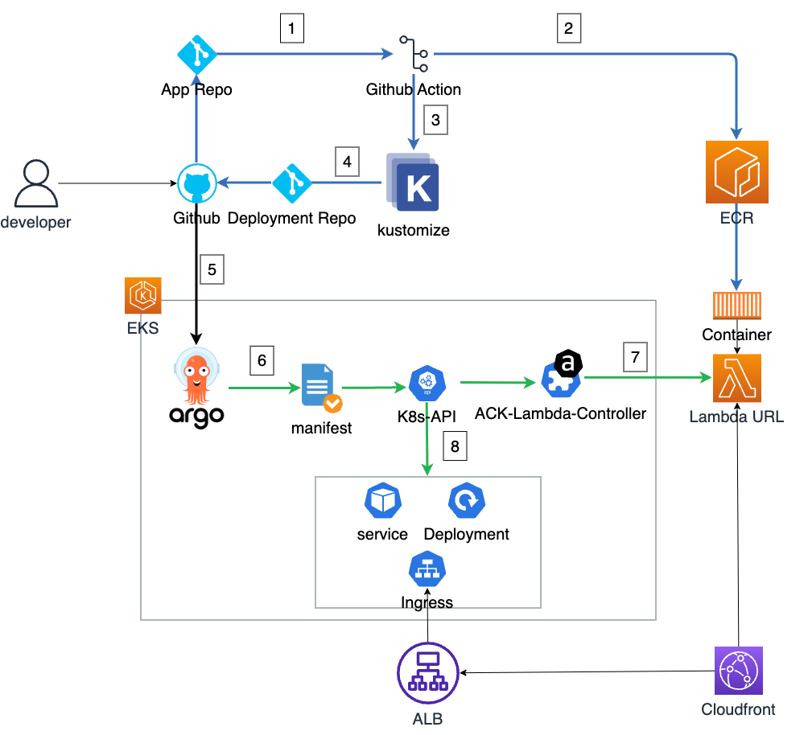
其中主要的集成和发布流程如下:
Git Action workflow 的关键代码部分定义如下:
- name: Build, tag, and push image to Amazon ECR
id: build-image ## 构建镜像并推送
env:
ECR_REGISTRY: ${{ steps.login-ecr.outputs.registry }}
IMAGE_TAG: ${{ github.sha }}
run: |
# Build a docker container and
# push it to ECR so that it can
# be deployed to ECS.
docker build -t $ECR_REGISTRY/$ECR_REPOSITORY:$IMAGE_TAG .
docker push $ECR_REGISTRY/$ECR_REPOSITORY:$IMAGE_TAG
echo "image=$ECR_REGISTRY/$ECR_REPOSITORY:$IMAGE_TAG" >> $GITHUB_OUTPUT
working-directory: ./python-app
- name: Update Kustomize image
run: | ## 替换变量为构建后的ImageID
kustomize edit set image ${{ steps.build-image.outputs.image }}
working-directory: ./Kustomize/base
- name: Apply Kustomize configuration
run: | ## 构建最终生产yaml文件
kustomize build ./base
mkdir -p ./prod
kustomize build ./base > ./prod/lambda-app.yml
working-directory: ./Kustomize/
- name: Commit and Push changes
run: | ## 提交到部署仓库
git config --global user.name "github-actions[bot]"
git config --global user.email "github-actions[bot]@users.noreply.github.com"
git add ./prod/lambda-app.yml
git commit -m "Update Kustomize output"
git push -u origin main
env:
GITHUB_TOKEN: ${{ secrets.GITHUB_TOKEN }}
working-directory: ./Kustomize/
在一个应用做了变更以后,我们可以看到 Github Action中会产生相应的log方便我们观察构建过程.
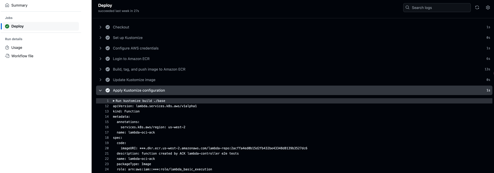
从Kubernetes 1.14 版本开始，Kustomize 已经内置于 kubectl 中.在此方案中我们在Github Action通过引入以下代码,使得Github Action可以执行 Set和Build的行为
- name: Set up Kustomize
uses: imranismail/setup-kustomize@v2
with:
kustomize-version: '4.0.5'
一般情况下我们可以建立一个如下的仓库目录,通过不同的目录区分部署的阶段(Stage),实际情况可以根据企业自身情况规划,总体原则是能在不同环境之间复用配置,同时针对特定场景提供额外配置(例如overlays)
├── base (基础模板)
│ ├── deploy.yaml
│ ├── ingress.yaml
│ ├── kustomization.yaml
│ ├── nginx.conf
│ ├── kustomizeconfig
│ └──mykind.yaml
│ └── service.yaml
└── overlays
├── pre (预配置模板)
│ ├── deploy-patch.yaml
│ ├── ing-patch.yaml
│ ├── kustomizeconfig
│ └──mykind.yaml
│ └── kustomization.yaml
├── prod (生产配置模板)
│ ├── deploy-patch.yaml
│ ├── ing-patch.yaml
│ ├── kustomizeconfig
│ └──mykind.yaml
└── kustomization.yaml
在实际使用时,我们只需要定义类似如下的模板文件,即可对模板进行更新
apiVersion: kustomize.config.k8s.io/v1beta1
kind: Kustomization
resources:
- ../../base
patches:
- path: patches.yaml
在workflow 中,对于一般的变量替换 我们使用kustomize edit set 即可将变量文件写入kustomization.yaml文件中,后期使用kustomization.yaml配合其他资源文件即可完成最终部署yaml文件的构建.
⚠️特别注意: 在此方案中Lambda资源的 由于不是 K8S内建资源,属于Custom Resource Definition(CRD),因此无法直接使用预制的结构使用kustomize edit set进行替换,这时需要声明自定义类型进行转换.
具体需要到
kustomizeconfig路径下创建mykind.yaml 文件,并在文件中定义资源的结构.
在此方案中具体定义如下:
images:
- path: spec/code/imageURI
kind: Function
同时在kustomization.yaml文件中需要在结尾配置中声明这个类型:
apiVersion: kustomize.config.k8s.io/v1beta1
kind: Kustomization
resources:
- function.yaml
configurations:
- kustomizeconfig/mykind.yaml
ArgoCD的安装部署非常简单,可以参考https://argo-cd.readthedocs.io/en/stable/getting_started/, 建议也同步安装好ArgoCD Cli
部署完成后可以使用"kubectl port-forward -n argocd service/argocd-server 8080:80"将ArgoCD的访问页面映射到本地访问8080端口访问,可以使用"kubectl -n argocd get secret argocd-initial-admin-secret -o jsonpath="{.data.password}" | base64 -d" 获取admin的密码
登录完成就可以进入部署应用界面部署应用
其中在 SyncPolicy中可以设置是否为自动同步,建议在生产环境加入一个审批过程然后再部署.
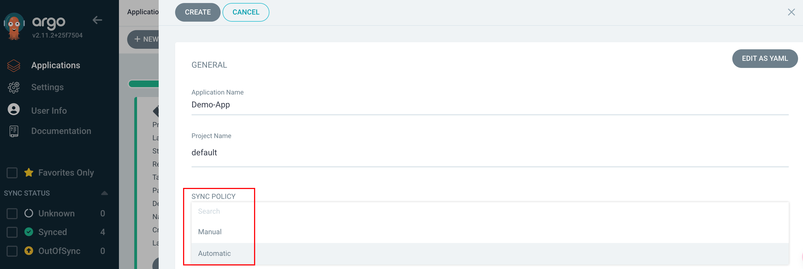
在源的配置中可以选择指定的目录和分支
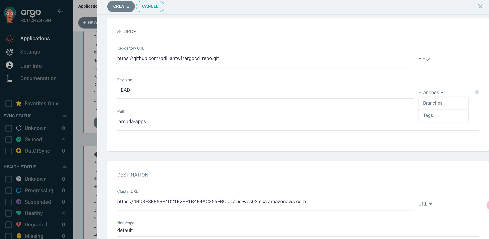
ACK 在此方案中的主要作用是部署容器环境之外的AWS 资源,例如AWS Lambda ,Amazon RDS 数据库等
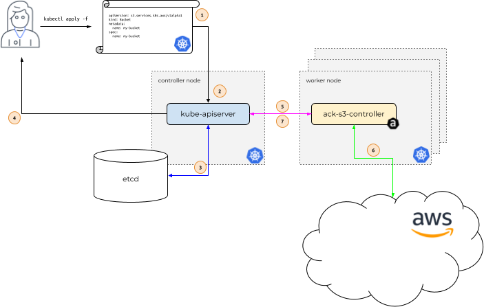
其主要原理是利用ACK服务控制器(ACK Service controller)对AWS 各种服务进行部署和管理.
截止此文发稿,目前 ACK 已经支持20类AWS 服务.具体服务的支持情况可以参考此链接
ACK 的安装过程可以参考 此文档:https://aws-controllers-k8s.github.io/community/docs/user-docs/install/,推荐使用helm方式安装.
由于每个服务器控制器部署时需要的权限不同,因此需要根据需要部署和管理的服务不同,分配的权限策略不同,以 ACK Lambda controller 为例,需要在{ack-lambda-controller }角色中增加AmazonEC2ContainerRegistry的读取权限 否则Lambda无法从镜像中拉取镜像部署.
Lambda Web Adapter 非常适合改造已有的web业务,只需要在之前容器Dockerfile中加入一行代码即可(arm和x86架构不同),例如
FROM public.ecr.aws/docker/library/node:20-slim
COPY --from=public.ecr.aws/awsguru/aws-lambda-adapter:0.8.3 /lambda-adapter /opt/extensions/lambda-adapter ## <---插入此行即可
ENV PORT=7000
WORKDIR "/var/task"
ADD src/package.json /var/task/package.json
ADD src/package-lock.json /var/task/package-lock.json
RUN npm install --omit=dev
ADD src/ /var/task
CMD ["node", "index.js"]
官方仓库中提供了非常多的示例可以参考,在生产部署是需要注意临时文件的管理,目前Lambda只允许写入到/tmp路径(需要在lambda配置中设定).
LWA 发布的页面可以通过Lambda URL配合Cloudfront 进行发布,而且配合Cloudfront的连接复用也可以达到动态访问加速的效果,如果Lambda发布的web应用只使用基本的get请求,可以通过Cloudfront Origin access control(OAC)进行访问控制,否则需要将Lambda URL设置为公开访问或额外配置验证方法.
如果希望通过Cloudformation快速部署LambdaURL+Cloudfront,可以参考此Stack例子
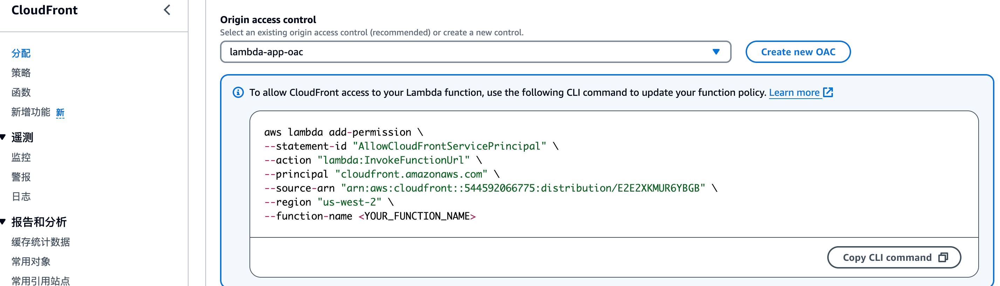
...
remote: Resolving deltas: 100% (3/3), completed with 3 local objects.
To https://github.com/brilliantwf/lambda-workflow.git
576ae06..cf6f9c6 main -> main
在Github Action中可以看到已触发更新的workflow
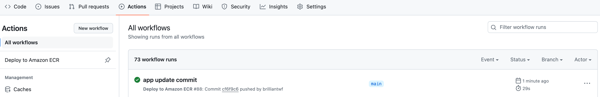
此时在ECR中可以看到 对应的Image做了更新,并标记了最新的tag.
此时可以看到ArgCD应用的同步状态已变更为OutOfSync,说明应用代码有变更
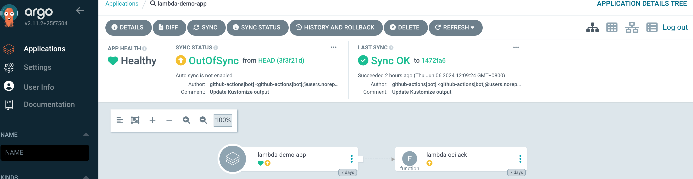
此时点击 SYNC 按钮,等待片刻即可看到应用部署完成.
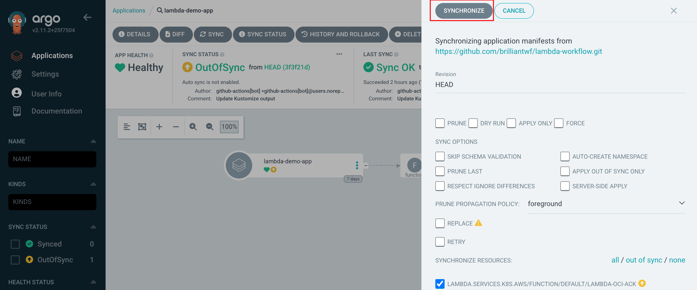
点击应用详情里,可以看到部署的manifest
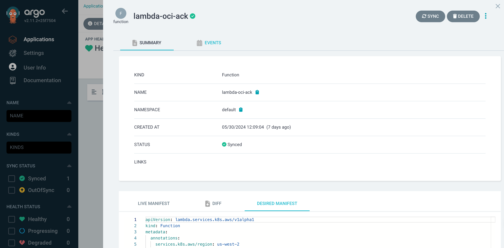
容器环境的更新和上述过程类似,只需要更新Deployment Repo中对应的目录即可自动触发后续步骤.
最终效果类似如下图:
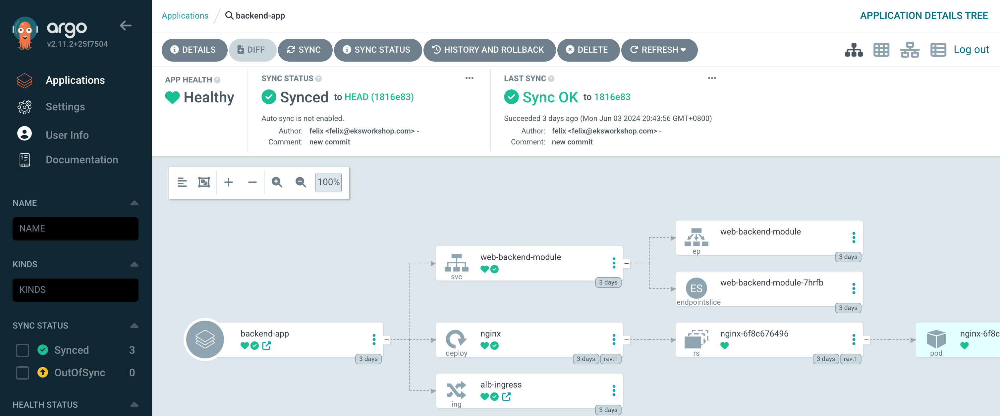
由于Lmabda的无服务器技术的计费是按照Lambda的资源配置和运行时长计费,一般每次请求的调用时间以毫秒计算,相较于容器和EC2其计费颗粒度更细,因此使用无服务器化相较于容器化会更进一步降低成本,企业可以根据其业务情况,对http业务做无服务器化改造,对于需要长链接和TCP支持业务仍然可以考虑将这些业务部署在容器化环境.本方案提供了一个可以使用一套同时无服务器和容器化的业务进行部署和管理的参考架构,可以降低了混合环境的维护复杂度,实际生产环境可以根据情况增加持续集成部分的测试和审核阶段,在容器和环境利用Kyverno等组件规范化容器资源策略等.